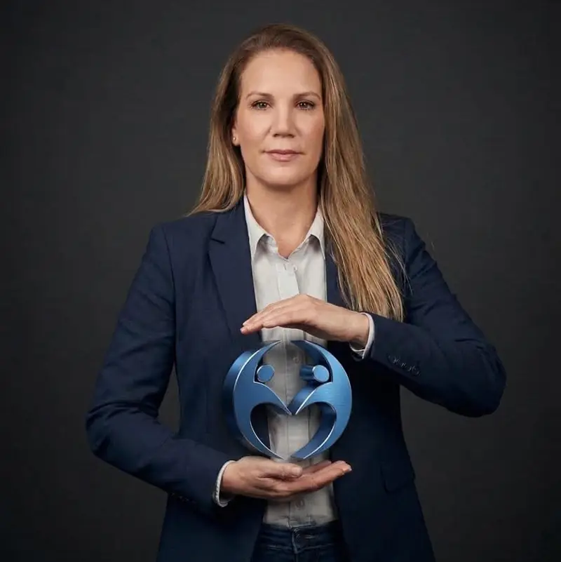

О Центре «Эден»
Центр, где вода, профессионализм, индивидуальный подход и безопасная обстановка объединяются в единый процесс.
Что такое Центр «Эден»
Центр «Эден» — центр водной терапии в Нес-Ционе для малышей, детей, подростков и взрослых. Мы предлагаем гидротерапию, лечебное плавание, плавание для младенцев и другие водные занятия, но для нас всё начинается не с названия направления терапии, а с человека, который приходит к нам.
История Центра «Эден»
Центр «Эден» родился из самой жизни. Ронит Бленро, мама троих сыновей, двоих из которых — с РАС, хорошо знакома с тревогами, трудностями и теми небольшими шагами вперёд. Помимо личного опыта она прошла подготовку как поведенческая терапевтка, специалист по эмоциональной терапии и консультант по воспитанию. Связь между домом и профессиональной сферой со временем стала её миссией: создать место, которое прежде всего видит человека, а не его сложности.
Именно из этого пути возник Центр «Эден», чтобы дать детям и семьям профессиональное, принимающее и уважительное пространство, где в личном темпе выстраивают уверенность, самостоятельность и жизненные навыки. Место, где родителям не нужно объяснять всё с самого начала, потому что перед ними команда, которая понимает: вся семья — часть процесса.
Что отличает Центр «Эден»
Особенность Центра «Эден» — в сочетании опытной профессиональной команды, качественных и тщательно подготовленных бассейнов, небольших групп, индивидуального подхода и способности адаптировать формат под возраст, возможности, уровень уверенности и личные цели.
Мы убеждены, что хороший процесс строится на доверии, преемственности и личном знакомстве. Поэтому для нас важно, чтобы ребёнок, подросток, взрослый или вся семья чувствовали, что их знают, понимают их темп и умеют адаптировать подход.
Преемственность от раннего возраста до взрослой жизни
Центр «Эден» предлагает поддержку для широкого возрастного диапазона: от плавания для младенцев с родителями, через водную терапию и плавание для детей и подростков, до занятий и водной терапии для взрослых. Такая преемственность позволяет учитывать разные потребности на разных этапах жизни и создаёт ощущение единого места, которое сопровождает семью на всём пути.
Бассейны — важная часть качества услуг
Водная среда — неотъемлемая часть опыта. Мы тщательно следим за чистотой, обслуживанием, качеством воды и контролем в соответствии с указаниями Министерства здравоохранения Израиля и соответствующими требованиями, чтобы занятия проходили в приятной и аккуратно поддерживаемой обстановке.
Наши ценности
- Профессионализм и подготовка
- Индивидуальное внимание и терпение
- Индивидуальная адаптация, а не шаблонный подход
- Уважение к индивидуальному темпу
- Связь и взаимодействие с семьёй по мере необходимости
- Тёплая, опрятная и уважительная обстановка

Короткая консультация по подбору программы поможет разобраться
Оставьте контактные данные — мы свяжемся с вами, чтобы уточнить потребности и подобрать подходящую услугу в Центре «Эден».
Почему семьи выбирают Центр «Эден»
Особенность Центра «Эден» — сочетание профессиональной водной среды, команды, которая знает человека, а не только терапию, индивидуальной адаптации и обеспечения чёткой преемственности на протяжении всего пути.
Записаться на консультацию по подбору программы в Центр «Эден»